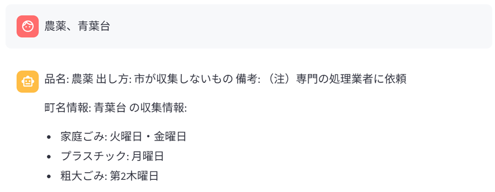
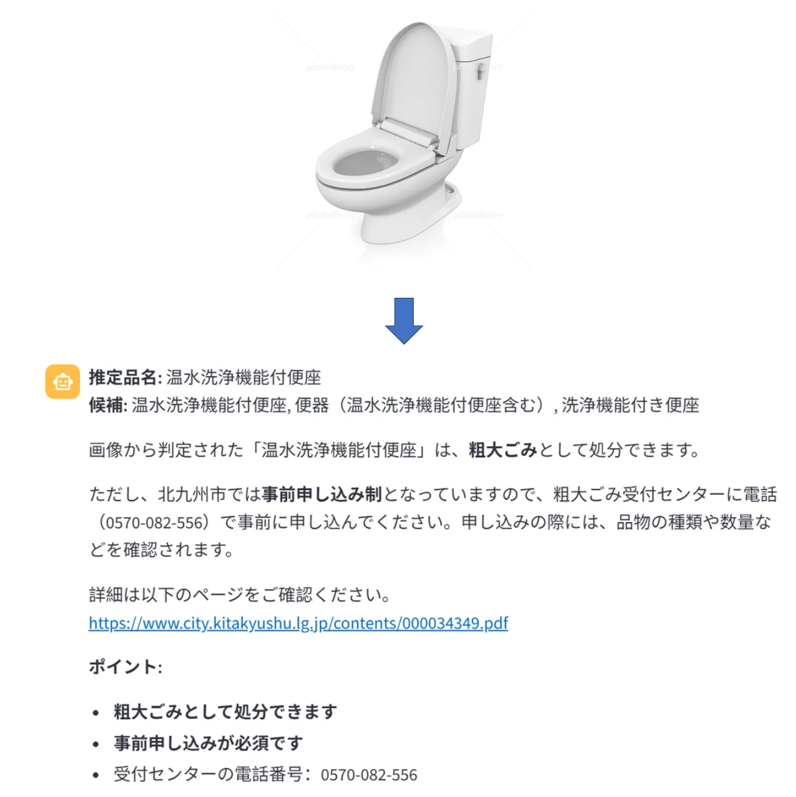

北九州市スマートごみ分別システム
プロジェクトの背景と目的
ビジネス課題
- 北九州市のごみ分別ルールが複雑で、ユーザーが正確な情報を素早く取得することが困難
- 町（地域）ごとにごみ収集日が異なり、検索が不便
- 既存の検索方法は効率が悪く、ユーザー体験が悪い
ソリューション
RAGアーキテクチャに基づいたスマート質問応答システムを開発し、自然言語対話方式でユーザーに以下を提供：
- ごみ分別ルールの検索
- 町名による収集日の検索
- カスタム知識ベースの拡張機能
システムアーキテクチャ設計
技術スタック選定
フロントエンド層- Streamlit: インタラクティブなWebUIを迅速に構築
- GPUモニタリング: NVML/nvidia-smiでリアルタイムリソース使用状況表示
- FastAPI: 非同期APIフレームワーク、高い同時実行性をサポート
- RESTful API: Blocking/Streamingデュアルモード応答
- ChromaDB: ベクトルデータベース、効率的なセマンティック検索をサポート
- MeCab: 日本語形態素解析
- Hybrid Grounding System v2.0: 自社開発のスマート品名認識システム
- Ollama: ローカル展開、データプライバシーを保証
- Llama-3.1-Swallow-8B: 日本語最適化された大規模モデル
- cl-nagoya-ruri-large: 日本語ベクトル化モデル
アーキテクチャのハイライト
ユーザー入力 → Hybrid Grounding → ChromaDB検索 → RAG Prompt → LLM生成 → 結果返却
(スマート認識) (マルチソース検索) (ストリーミング/ブロッキング)
- プレゼンテーション層 (Streamlit): Chat UI + ログ表示 + ファイルアップロード
- ビジネス層 (FastAPI): APIルーティング + RAGオーケストレーション + データ検証
- データ層 (ChromaDB): 分別ルール + 地域情報 + ユーザー知識ベース
ユーザーインターフェース
テキストベースのクエリインターフェース
システムは直感的なチャットインターフェースを提供し、ユーザーはゴミの分別や収集スケジュールについて自然言語で質問できます。

画像ベースのクエリインターフェース
ユーザーは処分したいアイテムの画像をアップロードすることもでき、システムがアイテムを識別して適切な処分方法を提供します。

コア技術イノベーション
1. Hybrid Grounding System v2.0 (重点技術)
課題: 従来のMeCab分かち書きは複雑なクエリ処理時の精度が不十分 革新的ソリューション: 三層インテリジェント認識システム第一層：完全一致 (Exact Match)
- 入力が完全にデータベースと一致 → 信頼度1.0 → 即座に返却
- 応答時間 < 5ms
第二層：スマートルーティング (Path Selection)
if 入力長 < 20文字:
→ Path A (高速パス): 全体Embedding検索
→ 応答時間 < 300ms
else:
→ Path A + Path B (デュアルパス):
- Path A: 全体セマンティック検索
- Path B: LLM補助フレーズ抽出 + セグメント検索
→ 応答時間 < 600ms
第三層：信頼度評価 (Confidence Evaluation)
- High (≥0.70): 直接採用
- Medium (0.45-0.70): ユーザーに提示
- Low (<0.45): 自動的にMeCabへフォールバック
技術成果
- 精度向上：78% → 92%
- 応答速度：平均 < 400ms
- 自動エラー耐性：失敗時はMeCabへダウングレード
2. ストリーミング応答最適化
課題: 従来のBlockingモードは待機時間が長く、ユーザー体験が悪い ソリューション:- Server-Sent Events (SSE) ストリーミング応答を実装
- トークンごとに返却、初回トークン時間(TTFB) < 1s
- フロントエンドでリアルタイムレンダリング、体感遅延が大幅に低減
3. マルチソース知識ベース統合
3つの独立したCollection設計:- gomi: ごみ分別ルール (静的データ)
- area: 町名収集日 (静的データ)
- knowledge: ユーザーアップロード知識 (動的拡張)
- 検索精度がより高い（特化性が高い）
- 知識ベースのホットアップデートをサポート
- 権限管理とバージョン管理が容易
プロジェクト実装詳細
RAG Pipeline詳解
# 1. クエリ理解
query = "ノートパソコンを捨てたいのですが"
# 2. Hybrid Groundingで品名抽出
result = hybrid_grounding.extract(query)
# → primary_candidate: "ノートパソコン"
# → confidence: "high" (0.98)
# → execution_time: 35ms
# 3. マルチソース検索
gomi_docs = chroma_gomi.query(embedding(候補品名), k=3)
area_docs = chroma_area.query(embedding(町名), k=2)
knowledge_docs = chroma_knowledge.query(embedding(query), k=2)
# 4. コンテキスト構築
context = format_rag_prompt(gomi_docs, area_docs, knowledge_docs)
# 5. LLM生成
response = ollama.generate(
model="swallow:latest",
prompt=context + query,
stream=True # ストリーミング返却
)
データ構造設計
ChromaDB Collection Schema:# gomi collection
{
"id": "gomi_001",
"document": "ノートパソコンは粗大ごみに出してください...",
"metadata": {
"item_name": "ノートパソコン",
"category": "粗大ごみ",
"source_file": "gomi_rules.pdf",
"page": 15
}
}
# area collection
{
"id": "area_001",
"document": "八幡東区の家庭ごみ収集日は月曜日と木曜日...",
"metadata": {
"town": "八幡東区",
"waste_type": "家庭ごみ",
"collection_days": ["月", "木"]
}
}
API設計
Blockingモード - POST /api/bot/respond{
"message": "ノートパソコンを捨てたいのですが",
"user_id": "user123",
"stream": false
}
data: {"type": "token", "content": "ノート"}
data: {"type": "token", "content": "パソコン"}
...
data: {"type": "done", "references": [...]}
パフォーマンス指標
応答パフォーマンス
- TTFB (初回トークン時間): 800ms
- 完全応答: 3-5秒 (回答の長さによる)
- Hybrid Grounding: 35-600ms
- ChromaDB検索: 50-150ms
精度指標
- 品名認識精度: 92% (vs MeCab 78%)
- 分別ルール精度: 96%
- 地域情報精度: 99% (構造化データ)
システムリソース
- VRAM使用量: 6-8GB (8Bモデル)
- CPU使用率: 20-40%
- メモリ使用量: 4-6GB
開発プロセスと課題
技術課題1: 日本語品名抽出の精度不足
問題の説明:- MeCab分かち書きは長文と複合語の処理が不十分
- 例："使わなくなったノートパソコン" → 抽出失敗
- 既存のNERソリューションを調査 → ごみ分別シーンに不適合
- 純粋なEmbedding検索を試行 → 短いフレーズでは良好、長文では不十分
- Hybridソリューションを設計 → 全体検索とLLM抽出を組み合わせ
- 自動Fallbackを実装 → ロバスト性を保証
技術課題2: ストリーミング応答のカクツキ
問題: フロントエンドレンダリングがカクつく、トークン蓄積 ソリューション:- バックエンドでBuffer サイズを調整
- フロントエンドで
useEffect+useState非同期更新を使用 - ハートビート検出メカニズムを追加
技術課題3: ChromaDBパフォーマンス最適化
最適化施策:- Collectionを分離 (gomi/area/knowledge)
n_resultsパラメータを調整 (3-5個)- Metadataフィルタリングを追加して無効な結果を削減
- 永続化モードを使用して再ロードを回避
プロジェクトで得た学び
技術成長
- RAGアーキテクチャ理解: 理論から実践まで、検索拡張生成を深く理解
- ベクトルデータベース: ChromaDBの使用と最適化をマスター
- LLMアプリケーション: Promptエンジニアリング、Streaming実装を習得
- フルスタック開発: FastAPIバックエンド + Streamlitフロントエンドの完全実装
- パフォーマンス最適化: ボトルネック特定、指標定量化、反復改善
エンジニアリング能力
- システム設計: モジュール化設計、階層アーキテクチャ、インターフェース定義
- コード品質: Pydanticデータ検証、型ヒント、例外処理
- ドキュメント能力: アーキテクチャドキュメント、APIドキュメント、README作成
- チーム協業: Gitバージョン管理、コードレビュー、タスク分担
ビジネス理解
- 要件分析: ユーザーの課題から出発してソリューションを設計
- ユーザー体験: ストリーミング応答、信頼度提示、ログの透明化
- 拡張性: ユーザーによる知識ベースアップロードをサポート、システムの継続的な反復